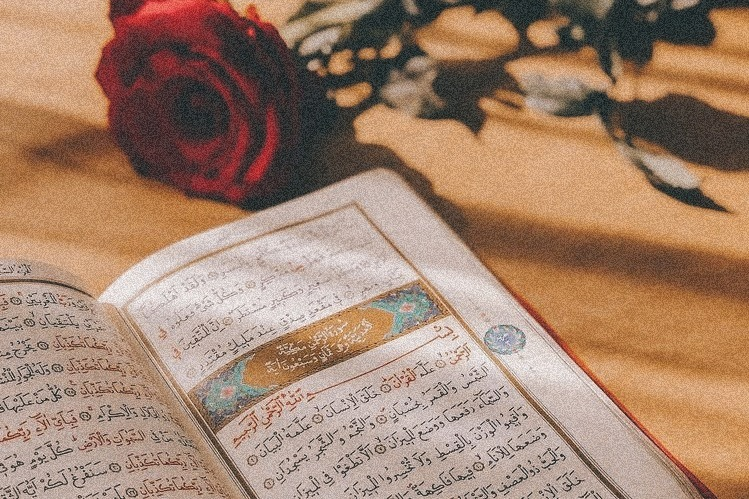
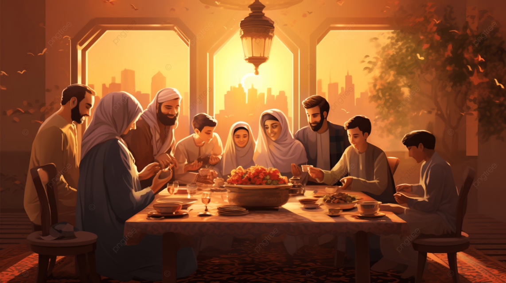

What Makes Ramadan A very Special Month?
The month of Ramadan is the ninth
month in the Hijri calendar, and it is a
special month for Muslims as the Quran
was revealed to the Prophet Muhammad in the night of power"Laylat-al-Qadr"

BUT is that ALL????
No
One of The Most Special Things That Make Ramadan A Very Special Month is
Family Gathering

Ramadan is a time when family gathering become a priority and the surprise is that we manage to
arrange for it with very high sense of enthusiasm. The time of this special meal creates a sense of connection,
communication,
joy and mawadah and that is what every family is trying to find and achieve along the year.